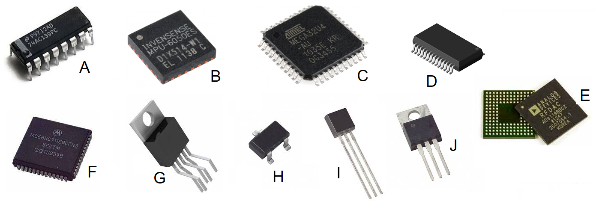
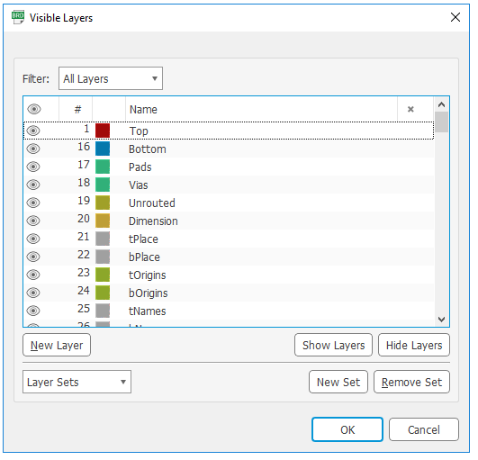
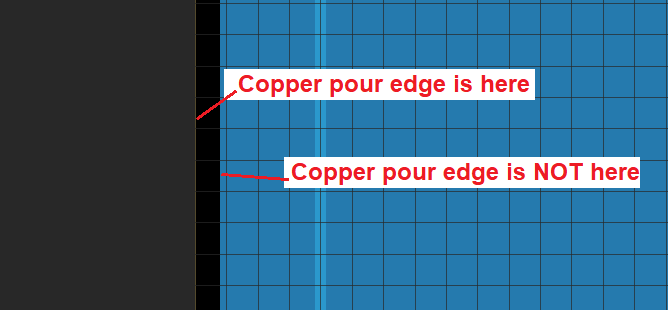
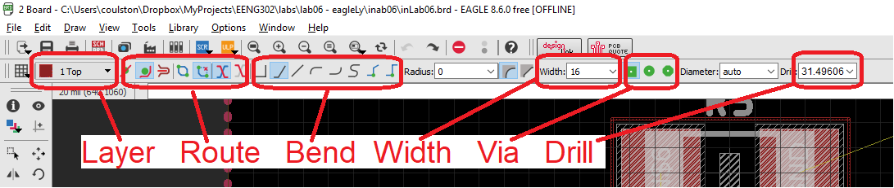
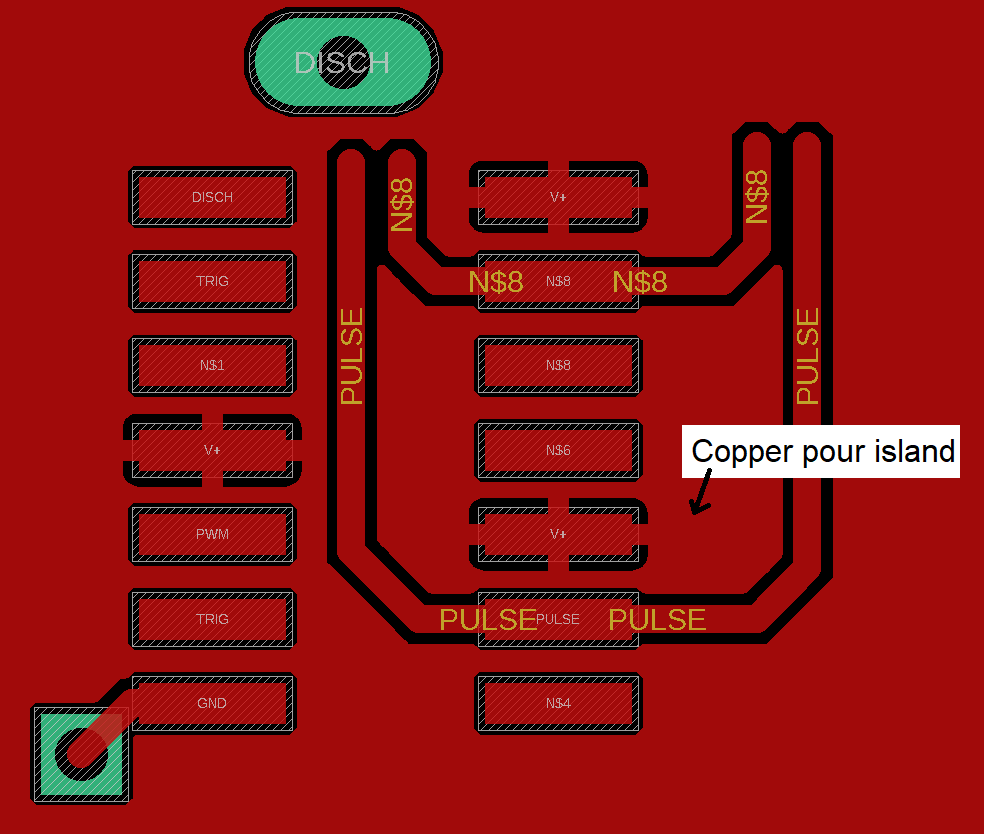

EENG 393
In Lab 2 - VU Meter LayoutRequirements
When you have worked through all the material in this lab writeup, please take the inLab 02 Quiz. You may find quiz questions to be similar to, but not identical to the numbered questions in this inLab write up. Note, you wil have 60 minutes to complete the ten questions in the Canvas quiz so it would be a good idea to complete all the inLab activities before taking the Canvas quiz. Do not turn in the answers to the numbered questions in this inLab writeup.Integrated circuit packages
The heart and soul of most electronics devices are integrated circuits (ICs), collections of metal oxide silicon field effect transistors (MOSFET) photographically etched onto the surface of thin slices of silicon. Silicon is one of the primary ingredients in glass, and like glass, ICs, are very fragile. Hence, the silicon slice is encapsulated in plastic resin and connected to the outside world bonding wires connected to pins (leadframe). This combination has proven to be very reliable in operation and inexpensive to manufacture in large quantities.
There are a wide variety of IC packages to accommodate the wide range of applications they are asked to serve in. A few are shown in the image below.

Despite outward differences in shape and size, IC packages share some common characteristics which are well worth knowing.
- Package type
- The package type refers to the shape of the plastic package and pins.
- Do some Internet searching to complete the following table
using the parts in the image above. In the "abbreviation" column,
use the abbreviation closest to the Full name of the device.
In the image column list a letter [A … J].
Abbreviation Full name Application image Small outline package Production surface mount TO-220 TO-220 Power devices TO-220-5R TO-220-5R Power devices Plastic leaded chip carrier Replaceable high pin-count devices Ball grid array High pin count performance chip QFP Quad flat pack Production surface mount Dual in-line package Through hole prototyping SOT-23 SOT-23 Low power devices TO-92 TO-92 Low power through hole parts QFN Quad Flat No-lead Production surface mount - Index pin
-
Many IC packages have multiple axis' of symmetry, making it possible to
install the IC incorrectly on the PCB. Even when IC orientation is more
obvious, manufactures will often add visual clues to indicate one particular
pin on the package. This index pin is often labeled pin 1 in the IC's
technical documents.
There are a variety of methods vendors use to identify pin 1 including
special markers printed onto the surface of the IC, special markers
molded into the surface of the IC package,
and physical differences in the length or shape of the pins.
Printed methods include a small circle to indicate a particular pin, or a stripe of paint to indicate the "top" of the part. When an IC is held so that the dot is top left, or the strip is at the top, pin 1 is the top pin on the left side with pin numbers increasing downward along the left side and then continuing from the bottom-up on the right.
There are several ways to indicate pin 1 by molding features into the IC. The simplest is to mold a round indentations next to pin 1. Some manufactures will bevel a long edge on rectilinear ICs. When you orientate the IC so that the beveled edge is on the left side, pin 1 is the top pin on the left side. On square IC packages, a corner may be nipped off. When the IC is orientated with the nipper corner as the upper left corer, pin 1 is the top pin on the left side.
Many 2-pin polarized through-hole devices are symmetrical enough that they can easily be installed backward. One physical clue to the orientation of these devices is to note the length of the leads. If there is a noticeable difference (greater than 0.5cm), then it's a good bet that the longer lead is the positive potential, and the shorter lead the negative potential of the device. - Manufacture
-
In some of the larger IC packages, the vendor has the luxury of being able
to print their entire name. With more limited space, the vendor may only
be able to fix their logo.
The following image, coutsey of www.electronicspoint.com lists many of the
leading semiconductor manufactured and their associated logos.
{kind=link}
- Make an educated guess about the date the board was assembled by looking for the most recent original chip on the board.
PCB structure
Once the schematic is complete it's time to layout the physical board, the printed circuit board (PCB). The PCB structure is illustrated in the following diagram. Each of the numbers in the diagram is explained in the numbered text which follows.
Note, the following are not question numbers, but identifiers to the figure above.
- Fiberglass substrate (FR4) - If you look at the PCB edge-on you will see a tan colored plate of material that composes the majority of the PCBs volume. Our PCBs are made from most common substrate called FR4. The "FR" in FR4 stands for Flame Retardant meaning that this material self-extinguishes once a flame is removed.
- Trace - The fiberglass substrate of our PCB is laminated with a layer of copper on the top and bottom sides. The thickness of this copper is stated in terms of weight (in ounces) per square foot. Our boards are fabricated with 1 ounce copper which results in a copper thickness of 34µm. During the manufacture of the PCB, copper on both sides is selectively etched away to form the pattern on copper that you see. A trace is a thin strip of copper that forms a wire connecting two or more terminals. Laying out the traces on a PCB is the most time consuming task when designing a PCB. Traces on the top of the board are red and traces on the bottom of the board are blue.
- Plated through-hole - There are a variety of reasons that we need to put holes in a PCB. For example, you might need to mount a through-hole component, or cross a pair of traces without electrically connecting them. When holes are put into a PCB we most often plate the sides of the hole with a conductive material so that an electrical signal can pass from the bottom of the hole to the top. If you look carefully at the hole in your PCB you will see that they are shiny.
- SMT pad or SMT land - In order to attach a surface mount component to the PCB, part of the solder mask is removed from each contact point between the component and the PCB. Each of the exposed copper areas is coated with solder producing a shiny silver surface called a pad or land. The set of exposed pads associated with a component is called the component's footprint on the PCB.
- Solder mask - The solder mask is the green (or blue) coating over the majority of the PCBs surface. It performs three useful functions; it provides a modest level of electrical insulation for the copper it covers, it protects the copper from oxidation, and it helps prevent solder from sticking to areas you do not want soldered.
- Top copper pour - Only a fraction of the top layer is covered in traces. The unused copper on the top layer is often put to use by a PCB design by having it carry a power voltage, in our case 3.3v. Consequently, anytime a device needs power, it will connect to excess copper in the top layer. The term "pour" is used to conjure the idea that the copper is poured onto the PCB in a liquid state, flowing to all available regions not occupied by some PCB feature.
- Bottom copper pour - The unused region of the bottom side of the PCB is almost always connected to the ground. This is most frequently called the "ground plane". Since many components need to be connected to ground, there are a lot of holes through the board that connect to the ground plane.
- Silk screen - the silk screen is the white text on the PCB. Generally the silk screen tells you where you to place a component and the components value. The part identifiers on the PCB should exactly match the part identifiers on the schematic.
EAGLE layout
The goal of this weeks lab is to give you some experience actually laying out a PCB based on the circuit that you built last week with one modification. After laying out your PCB, you will compare your work against my layout of this circuit to gain some insight into other ways to solve this problem. The schematic for the circuit you will be laying out should look familiar and is shown below.
I have provided lots of material to get you started with this lab. The next circuit will require you to make all these materials for yourself. These files include:
{kind=link}
EAGLE CAD - Getting started
Let's start off by getting EAGLE setup and the starter files that I've proved in the correct locations. Before you start on the instructions below, it would be a good idea to place a directory structure for this class on your Hornet drive. I have a EENG393 master directory for all course content. In this folder I have a lab directory which contains all my lab work. I then have a lab01, lab02 &helips; directory for each lab - the "01" allows a alphabetic order to retain the numerical order of the labs when we get to labs 10 and later. In each lab0x directory I have a inLab folder and a postLab folder for work performed during and after lab respectively.Create a directory for lab02 and a subfolder for inLab work. Now continue with the instructions below.
- Launch EAGLE 9.1 - the orange icon
- When prompted to sign-in, use your existing AUTODESK account or click on the "Create Account" link, complete the Create account form. May I suggest not using your Mines email or password for AUTODESK. You may leave Mines at some point and using this email address may be confusing to future you. I normally don't say this, but you may not want to enable 2nd factor authentication because you will have to log in every time you use EAGLE in our labs.
- At the EAGLE Control Panel, click
- Options → Directories…,
- In the Directories pop-up, remove anything in the Projects box and use the Browse&ellip; button at the bottom of the Directories pop-up.
- In the "Add directory for Projects" pop-up navigate to "hornetDrive\EENG393\lab", where hornetDrive is the drive designator letter. When you've done that, click on the "Select Folder" button at the bottom of the pop-up.
- Click the "OK" button in the "Directories" pop-up,
- In the Control Panel click on the ▶ to the left of the Projects label in the left subwindow to expand the directories where projects are stored,
- Use ▼ ▶ to navigate to the lab02 folder,
- On the lab02 folder icon, right mouse click and select "New Project",
- Name the project inLab02,
- Open the windows File Explorer and navigate to the inLab02 folder you just created (on your Hornet drive). You should see an orange "E" icon named eagle,
- Right mouse click on the following link and select "Save link as…". Navigate and save to the inLab02 folder
- Verify that both files are in the inLab02 directory using the Windows File Explorer,
- Go back to the EAGLE Control Panel,
- Close and then reopen the inLab02 folder by clicking on the ▼ ▶ to the left of the orange E in front of "inLab02". You will see the vuMeter.sch and vuMEter.lay files associated under this project,
- Double click on the vuMeter.sch file. You should see the shematic for the vuMeter (see image below).
- Double click on the vuMeter.brd file. You should see a very incomplete layout for the vuMeter,
- In the Eagle Control Panel, right mouse click on the "inLab02" project and select "Close Project". To the right of "inLab02" a green dot should appear followed by "Empty Project".
- Now open the inLab02 project by right mouse clicking on inLab02 and selecting "Open Project",
- Whenever you want to edit the project, please access the files by opening the project. This will insure your project stays consistent. A consistent project is one where the schematic and layout contain the same set of objects. From personal experience, you don't want your project to get inconsistent.
| Schematic | Layout |
 |
 |

Ok, we are ready to layout that PCB, but wait, what are we looking at???
EAGLE CAD layout - the quick overview
Like most (all?) PCB design tools, EAGLE presents the you with an overhead view of the PCB. You are looking down through the PCB seeing all the layers. The colors of the objects tells you about what layer they belong to and as a consequence what they mean. In the image below the board outline is orange, part outlines white and the component pads green. In order to complete the layout of this circuit you will need the tools identified in the left menu bar - we will examine these next.
Please take a minute to read through the following descriptions of what is going on in this image. While you are reading through, try clicking on the tools and experimenting. If you really goof something up, you can always re-download the files and start again.
- Grid Size
- When moving components or laying wires, your moves will be in increments of this size. You should make 50 mils the default for component positions and 20 mils the default for laying out wires. I'll show you how to change this before you start routing wires.
- Cursor location
- This piece of information is useful when you are trying to line up components or set the outline of your PCB.
- Information tool
- Use this tool to get information about a component or trace.
- Layer tool
- Allows you to hide or view the different layers of a PCB.
- Move tool
- Allows you to move (and rotate) components and traces.
- Route tool
- Allows you to convert unrouted wires into traces on the PCB. This is probably what you think about when you think "PCB layout".
- Ripup tool
- Allows you to convert a trace into an unrouted wire. Useful when you want to reroute a trace on the PCB - this happens a lot. You will also need to use the Ripup tool to hide copper pours - more on this later.
- Ratsnest tool
- Would you just look at that messy collection of components and unrouted wires. Ratsnest allows you to refresh the layout. This is useful when you move a bunch of components, or lay down a lot of new traces.
- Part handle
- In order to select a component with the move tool, you need to click on the part handle - a lightly marked cross hair. Maybe it's just me, but often have a very hard time finding the parts handle because there is no standard location for the part handle. When this happens to you, zoom-in on the part and click madly about, remembering that the part handle does not need to be inside the part outline.
- Board outline
- All your components and traces need to be inside this outline. Try to move something outside this boarder and EAGLE will complain and not allow it. A plain board outline is orange; I've added two copper pours to the board in order to simple layout - more on this later.
- Board origin
- Your boards should always have their lower left corner on the board origin. The origin always has a white cross hair over it.
Layer tool
You may find it helpful to occasionally suppress or select layers to view when laying out your PCB. The layer tool provides you with complete control over which layers are visible. Note, invisible layers are not deleted. Click on the Layer tool and you should see the following pop-up.
Layers 1 and 16 are the Top and Bottom copper layers - the conductive traces on the printed circuit board. Try selecting the "Select None" or "Hide Layers" button, everything is gone! Now try selecting a few layers clicking on the eye to the left of the layer name (or anywhere in the row). Click on "Select All" or "Show Layers". A handy feature is the preset layers - they are preset collections of layers with names. Try clicking on the "Layer Sets ↓" pull-down and select "Preset_Top". When you do, you will see a subset of the layers selected and shown in the layout. For the time being click on the "Cancel" button to go back to the default view.
Fortunately, you do not need to work with all 256 layers right from the start. For the time being, we will focus on the following layers.
| Layer | Name | Function |
| 1 | Top | Top copper foil - traces on the top of the PCB |
| 16 | Bottom | Bottom copper foil - traces on the bottom of the PCB |
| 17 | Pads | Ring of copper surrounding through holes. Used to solder device pins to board. |
| 18 | Via | Electrical connections between the top and bottom layers. |
| 19 | Unrouted | Air wires that form logical connections between electrical devices that need to be replaced by wires in the top or bottom layer. |
| 20 | Dimension | The outline defining the edge of the PCB. Called "Board outline" above. |
| 21 | tPlace | Silk screen text placed on the top side of the PCB. |
| 25 | tNames | Silk screened component names placed on the top side of the PCB. |
| 25 | tValues | Silk screened component values placed on the top side of the PCB. |
Moving around the layout
There are times when you will want to zoom-on and view a small area of the PCB. You could use the magnifier glass +/- icons at the top of the window, but there is a better options, the scroll wheel. The center scroll wheel on your mouse allows you to zoom in and out of the layout, centered on the current mouse position. Scrolling forward (away from you) zooms in and scrolling backwards (towards you) zooms out. When you get comfortable with this you will never need to use the slides on the side of the layout window to adjust what you are looking at, you'll just zoom in and out.Move tool
The Move tool is designed to allow you to adjust the positions of the components and traces on the PCB.- Click on the Move tool in the left toolbar,
- Click on the small "+" in the center of resistor R1. You should notice that the resistor turns a brighter shade of red,
- Move the mouse and the resistor R1 moves along with it,
- Right mouse clicking and watch as the resistor rotates 90° Clicking 4 times returns the resistor to its original orientation,
- If you accidentally picked-up the resistor and want to return the resistor to its original place, press the Esc key Press the Esc key now,
- Pick up the resistor with the Move tool, move it somewhere inside the board outline and left mouse-click to place the resistor at that location.
- Pressing Ctrl-Z will undo operations in the order they were performed. Press Ctrl-Z now to move the resistor back to its original position.
- Pick up the resistor with the Move tool, move it somewhere below and to the left of the lower left corner of the board outline and left mouse- click to place the resistor. You will get an Error stating that this is an illegal position for the component - there are restrictions of the free version of EAGLE. Press Esc to undo this move.
Pro-tip when placing components, the schematic is a useful tool. Take a look at the schematic and, to some extent, try to copy this organization in the layout.
Ratsnest tool
The Ratsnest tool probablly gets its name from the messy-looking collection of unrouted wires that litter a layout when it's first started. Whatever the reason for the name, use this tool whenever you want to refresh/redraw the layout. Try clicking on the ratsnest tool now. You will see two things:- The airwires may be re-routed.
- A large red (or blue) square filled the layout!
If you look closely at a fabricated PCB you will notice that a small portion of the board is dedicated to traces connecting components, but the vast majority of the surface of the PCB is unused copper. It may look unused, but most/all PCB designer use this "left over" copper to route power and ground.

EAGLE CAD allows you to do this using the Polygon tool - I already set this up for you on this first board. It is tradition to use the spare copper in the top layer to route the positive supply rail (VCC in our case), and the bottom layer to route ground (GND in our design). This spare copper is often called a copper pour because you can imagine that we are pouring the liquid copper over the parts of the board not containing traces. If you look closely at the LM324 you will see that that top copper pour (in red) is connected to the green VCC pad through four red lines attached to the red pour. The same goes for the GND pins of the LM324. We learn how to associate a signal with the copper pour in a later lab.

While these copper pours are very useful, there are many times when you don't want to see the pour as you are laying out your PCB. To make the copper pour invisible (but still there), click on the edge of the copper pour (red or blue dotted line) with the ripup tool. However there is a complication with this because the perimeter of the board has three different objects on it - the outline on layer 20, the top copper pour on layer 1, and the bottom copper pour on layer 16. When you click on the edge of the pour, EAGLE does not know which of these three layers you want to ripup because they are all coincident. When this happens you need to choose the layer using the following procedure:
- Click on the Ripup tool (two green dots, blue line, red x),
- Left click on the edge of the copper pour. Note the boundary
of the copper pour is always set back from where the edge by some
amount as shown in the image below.

- The board edge switch to a red highlighted dotted line as
shown in the image below. This indicates that you have selected
the edge in layer 1 (the top copper pour).

- Now right mouse click on the line. The highlighted red dotted line should change to a blue highlighted edge. Right mouse click one more time and the line will convert to the thin yellow board outline. Keep right mouse clicking to cycle through these three selections.
- When you get to the pour you want to make invisible, left mouse click.
- Unroute the top and bottom copper pours.
Information tool
Shockingly, the Information tool will provide you with the information about any component whose handle you click on. Note, the handle for an object can be tricky to locate, especially when it's coincident with the silk screen. Let's experiment with the information tool and its options. Click the Information tool from the left menu bar and click on the LM324's part handle this is a small cross-hairs in the middle of the IC, near the letter "L" in "LM324". Note, the component handle will not always be in the middle of the component. When you've done this you will get a "Properties" pop-up shown in the image below.
- Name
- The name of a component is given a default name that can be changed.
- Position
- The two boxes for the position are the X and Y coordinates of the component. You can also change the position of the component using the Move tool - you did this in a previous step.
- Mirror
- Moves the component to the bottom layer of the PCB. There is also a Mirror tool on the left menu bar especially for this operation. We may use this tool later in the term.
- Angle
- The angle of the component. You can also change the angle of the component by right mouse-clicking the component while it's selected with the Move tool.
- Spin
- Let's you flip the orientation of the component Value
- Locked
- Locks the position of the component on the PCB and will not allow the component moved until this box is unchecked.
- Smashed
- Let's you move the Name and Value of the component on the board independent of the position of the component. This is important when you are trying to make your board readable for the assembler.
Route tool
Finally, it's time to lay some tracks on the PCB.
Make sure that your route tool setting match those in the image above - you will need to adjust the Width. Now let's route an unrouted wire using the following steps. To start this exercise, place:
- R5 at (500, 1300), horizontal with N$1 on left
- R6 at (500, 1100), horizontal with N$2 on left
- Hide top and bottom copper pour

Look at the top menu in the EAGLE CAD window, Now select the route tool in the left toolbar by clicking on it. Now look back at the top toolbar, it's changed. The top toolbar is context sensitive - it changes its function depending on which tool is currently selected.
- Select the Route tool,
- Make sure the Layer pull-down is set to "1: Top" and the wire bend style is set to "wire bend style 1"
- Left mouse-click on the center of the left pad of resistor R5. If you zoom-in, this pad is labeled "N$1". "N" stands for "net" and this was the first net I made in the schematic capture tool,
- Move the mouse. You should see a PCB trace trailing between the mouse location and the center of the resistor pad as shown in the image above. Also notice that the pair of pads (on on R6 and one on the LM324)are highlighted - these are the other terminals of the selected net. I will call these pads, the target pads,
- Let's perform a neat experiment.
- Position the mouse above the N$1 pad (where you first clicked),
- Swing the mouse clockwise to the LM324 target pad. Note the position of the trace,
- Re-position the mouse above the N$1 pad (where you first clicked),
- Swing the mouse counter-clockwise to the LM324 target pad. Note that the position of the trace is different than before.
- Move the mouse to one of the target LM324 pad (I don't care how you get there) and left mouse click,
- Enjoy the satisfying bell chime indicating a net routed,
- Click on the Ripup tool in the left menu bar,
- Single click on a segment of your just routed net and watch it become unrouted. Hold Ctrl and click on a routed piece of the net to unroute the entire net,
- Select the Route tool and change the layer to bottom using the layer pull-down on the top toolbar,
- Click on the N$1 pad for resistor R5,
- Move the mouse. Note that the PCB trace trailing between the N$1 pad and the mouse location is blue to indicate that you are routing a trace on the bottom layer. As a general rule , we will attempt to route in the top layer whenever possible,
Vias
The word "via" comes from Latin and means "by way of" a reference to roads. In electronics design, we use the term "via" to mean a conductive holes placed along a routed wire that allows the signal associated with that wire to move between layers. You will be designing 2-layer PCBs, so your via's will move between the top and bottom layers.You will need via's because there are circuit configurations that cannot be routed in a single layer. Even through you should not need via's in the current layout, let's experiment with them so that we know how to use them for later assignments.
Look at the top menu in the EAGLE CAD window, Now select the route tool in the left toolbar by clicking on it. Now look back at the top toolbar, it's changed. The top toolbar is context sensitive - it changes its function depending on which tool is currently selected.
- Select the Route tool,
- Make sure the Layer pull-down is set to "1: Top" and the wire bend style is set to "wire bend style 1"
- Click on the N$1 pad for resistor R5,
- Move the mouse and drag the top trace along with it,
- Press the space bar to drop a via on the end of the trace,
- Continue moving the mouse to observe that the trace continues to move normally, just with a via on the end,
- Now, right mouse click to attach the via at the location where you clicked,
- Move the mouse and notice that the wire is being drawn
in blue using the via as a fixed way point. You are now routing
the N$1 signal on the bottom layer,

- Move the mouse and watch the bottom trace move around the board just like it did on the top layer,
- Want to get back to the top layer? Hit the space bar and left mouse click somewhere (anywhere except on top of your previous via),
- Ripup the track that you just laid.
- Label all parts with the value and name,
- Use the smash tool (just below the name tool) to separate the name and value of a component from the component. This allows component text to be placed consistently and legible,
- Use the information tool to change the characteristics of objects:
- Position of components and text
- Width of traces
- Size and position of text
- View → Grid to change the size of the layout grid,
- Always use a ground plane unless you are building a single-sided board,
- Avoid traces on bottom of the PCB,
- Minimize the number of distinct hole sizes,
- Avoid 90 degree turns in traces.
- Download the vuMeter Design Rules linked at the top of this assignment and place them in your inLab02 folder,
- Tools → DRC…,
- On the DRC pop-up click Load…
- Navigate to the vuMeter.dru file you store, select the file and click Open,
- Click the "merge into current settings" box,
- Click Apply,
- Click Check.
Copper pour islands
The great thing about copper pours is that they eliminate a lot of the routing. However, you can get too comfortable with pours and end-up creating routing problems for the signals in your pours. One common problem is called a copper pour island. A copper pour island is created when you separate the copper pour into two separate areas like the example below.
The problem in the example above is that the V+ pin on the IC can no longer connect to the V+ pour that carries the input voltage. While this contrived example is easy to fix, you may find yourself with more challenging instances. You will know that you have created a problematic copper pour island when a VCC pin needs to be routed.
Niceties
As a professional, I take pride in the work that I generate. This is one of the many things that I hope rubs off on you. The art of PCB design is finding a balance between electrical, enclosure and manufacturing requirements. Heck even aesthetics plays a role in the choices that I make when laying out a PCB. Towards that end, below are some guidelines that are motivated by these demands.Design Rule Check
The design rule checker (DRC) is a tool that examines your PCB for layout details that violate PCB tolerances and rules needed when fabricating your PCB.
During this assignment you will fix this, but clearly this is not something that you would want to have in your PCB when you sent it out for fabrication. Open the Airwire errors (by clicking the triangle to the left of Airwire) and double click one of the errors. EAGLE will take you directly to the center of that error. This is very handy for correcting errors. Unless you want to the errors following you around, click "Clear all" and then dismiss the DRC Errors window my clicking on the "X" in the upper right corner.